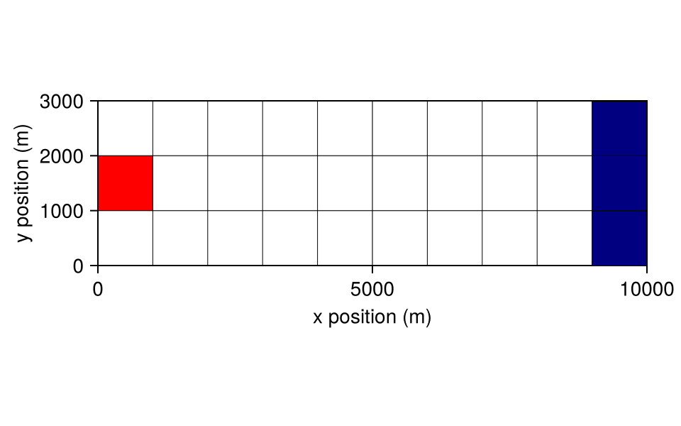
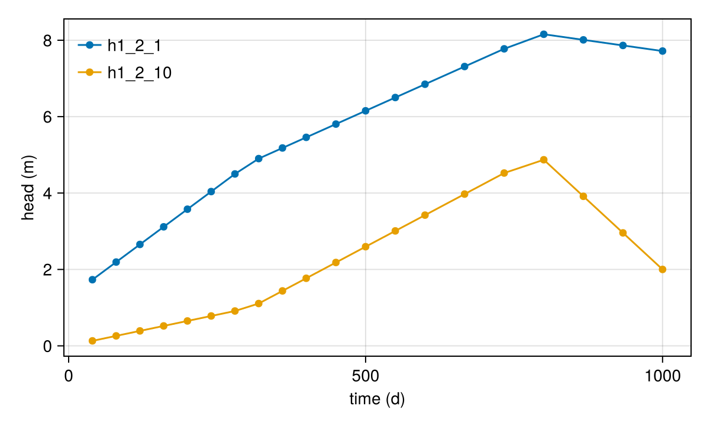
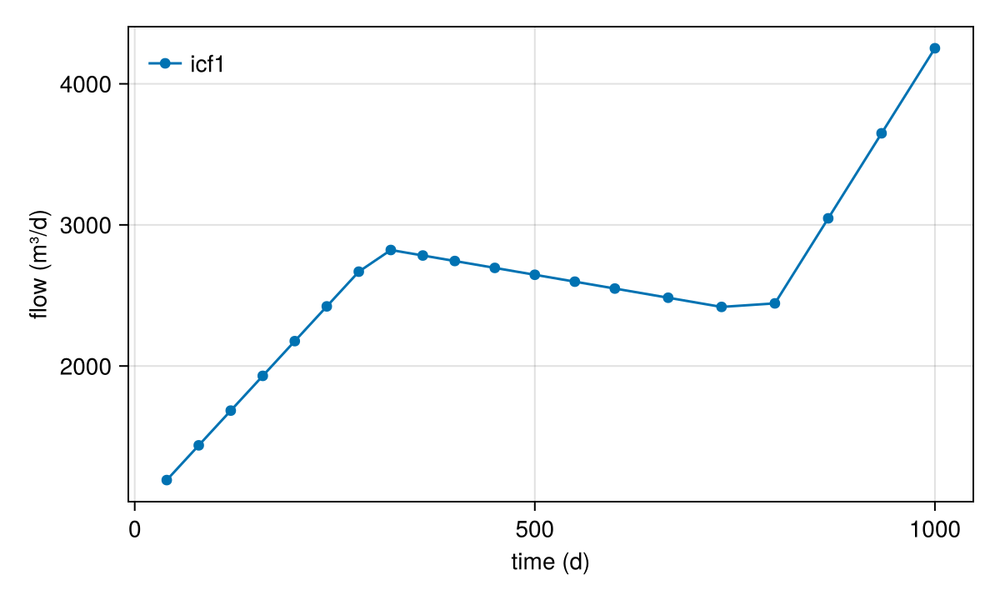
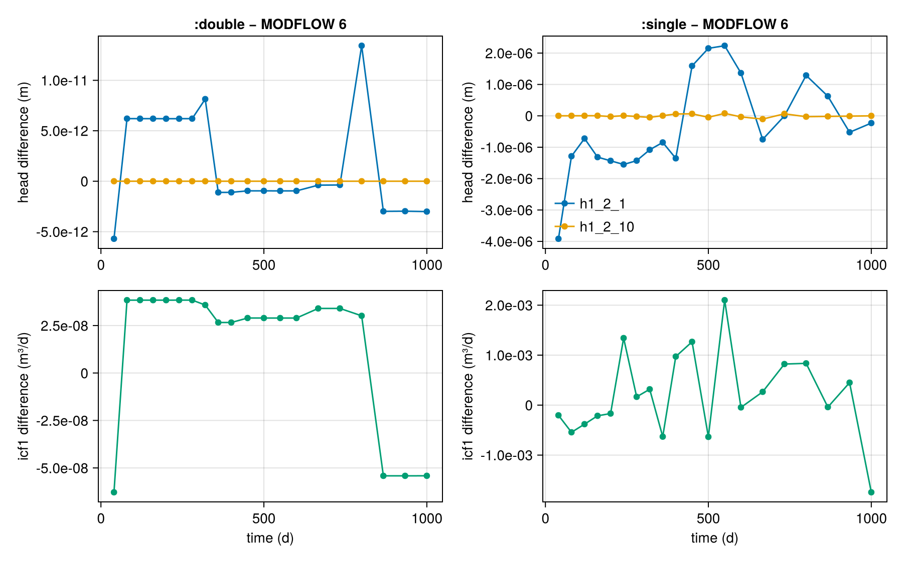

Flow and head boundaries from time series
A small transient model that reproduces the test problem of the Flow and Head Boundary (FHB) package of MODFLOW-2005 with MODFLOW 6 time series: one confined layer of 3 rows and 10 columns of 1000 m, three stress periods of 400, 200 and 400 days (10, 4 and 6 time steps), a specified head in the three cells of the last column and an injection well in the first cell of the middle row. Both the head (CHD) and the injection rate (WEL) come from time series files (.ts) with LINEAREND interpolation, so they change at every time step.
This is the MODFLOW 6 example ex-gwf-fhb. The example records the heads in the first and last cells of the middle row and the flow between the first two cells with the OBS package; ModflowGPU does not run OBS, so the same values are read here from its head and budget files.
Input and the MODFLOW 6 run
ExampleTools (docs/ExampleTools.jl in the repository) takes the input from the released mf6examples.zip, sets the tight closures of the parity tests in the IMS file, and runs MODFLOW 6.8.2. With an absolute INNER_RCLOSE of 1e-10 mf6 does not converge on this model, so the closure is relative (RELATIVE_RCLOSE), as for the reference run of the parity tests.
using ModflowGPU, CairoMakie
mf6 = example_run("ex-gwf-fhb")
mf6.mode, mf6.mf6_time("tight-relative", 0.031018615)The ModflowGPU run
In :double and in :single precision on the CPU, with the default options. The time series are evaluated on the host in Float64 at every time step, as MODFLOW 6 does.
runs = Dict(p => run_modflowgpu(mf6.dir, p) for p in (:double, :single))
r = runs[:double].result
r.converged, length(r.steps)(true, 20)The grid
The constant-head cells (blue) and the well (red).
g = read_dis_grid(mf6.dir)
fig = Figure(; size = (480, 300), figure_padding = (8, 24, 8, 8)) # room for the last x tick label
ax = Axis(fig[1, 1]; aspect = DataAspect(), xlabel = "x position (m)", ylabel = "y position (m)", xtickformat = intformat, ytickformat = intformat)
map_cells!(ax, g, budget_cells(g, r.budget_file, "CHD"); color = BC_COLORS["CHD"])
map_cells!(ax, g, budget_cells(g, r.budget_file, "WEL"); color = BC_COLORS["WEL"])
map_grid!(ax, g)
limits!(ax, extrema(g.xe)..., extrema(g.ye)...)
save_figure(fig, "ex-gwf-fhb-grid")
Heads and flow over time
The observations of the MF6 example: h1_2_1 and h1_2_10, the heads in layer 1, row 2, columns 1 and 10, and icf1, the flow into cell (1, 2, 2) from cell (1, 2, 1), at the end of every time step.
function series(run_or_dir)
hds, cbc = run_or_dir isa AbstractString ?
(only(filter(endswith(".hds"), readdir(run_or_dir; join = true))), only(filter(endswith(".cbc"), readdir(run_or_dir; join = true)))) :
(run_or_dir.head_file, run_or_dir.budget_file)
hf = open_head_file(hds)
t = [s.totim for s in hf.steps]
h1 = [read_head(hf, k)[1, 2, 1] for k in eachindex(t)]
h10 = [read_head(hf, k)[10, 2, 1] for k in eachindex(t)]
n, m = node(g, 1, 2, 2), node(g, 1, 2, 1)
ii = findfirst(i -> g.ja[i] == m, g.ia[n]:(g.ia[n + 1] - 1)) + g.ia[n] - 1
q = [vec(f)[ii] for f in read_budget(open_budget_file(cbc); text = "FLOW-JA-FACE")]
return (; t, h1, h10, q)
end
s = series(r)
fig = Figure(; size = (600, 360))
ax = Axis(fig[1, 1]; xlabel = "time (d)", ylabel = "head (m)")
scatterlines!(ax, s.t, s.h1; label = "h1_2_1")
scatterlines!(ax, s.t, s.h10; label = "h1_2_10")
axislegend(ax; position = :lt, framevisible = false)
save_figure(fig, "ex-gwf-fhb-obs-head")
fig = Figure(; size = (600, 360))
ax = Axis(fig[1, 1]; xlabel = "time (d)", ylabel = "flow (m³/d)")
scatterlines!(ax, s.t, s.q; label = "icf1")
axislegend(ax; position = :lt, framevisible = false)
save_figure(fig, "ex-gwf-fhb-obs-flow")
Comparison with MODFLOW 6
The differences of the three series between ModflowGPU and MODFLOW 6, at every time step, in both precisions.
s6 = series(mf6.dir)
fig = Figure(; size = (900, 560))
for (k, p) in enumerate((:double, :single))
sp = series(runs[p].result)
local ax = Axis(fig[1, k]; title = ":$p − MODFLOW 6", ylabel = "head difference (m)", ytickformat = expformat)
scatterlines!(ax, s6.t, sp.h1 .- s6.h1; label = "h1_2_1")
scatterlines!(ax, s6.t, sp.h10 .- s6.h10; label = "h1_2_10")
k == 2 && axislegend(ax; position = :lb, framevisible = false)
ax = Axis(fig[2, k]; xlabel = "time (d)", ylabel = "icf1 difference (m³/d)", ytickformat = expformat)
scatterlines!(ax, s6.t, sp.q .- s6.q; color = Makie.wong_colors()[3])
end
save_figure(fig, "ex-gwf-fhb-difference")
The largest head and budget differences over all cells and time steps, next to the values of the parity table, and the wall times (CPU: this build, including compilation for the first run of the session; GPU: the parity table, AMD Radeon RX 7800 XT).
stats = Dict(p => (; cmp = compare_with_mf6(mf6.dir, runs[p]), runs[p].time) for p in (:double, :single))
comparison_table("ex-gwf-fhb", stats)| Preset | max |Δh| (m), this build | max |Δh| (m), parity table | Budget, this build | Budget, parity table | CPU time, this build (s) | GPU time, parity table (s) |
|---|---|---|---|---|---|---|
:double | 2.3e-11 | 2.3e-11 | 1.9e-10 | 1.9e-10 | 1.00 | 0.03 |
:single | 3.9e-06 | 3.9e-06 | 1.4e-06 | 1.4e-06 | 0.96 | 0.33 |
Budget: the largest difference of a budget-file flow or a listing-table rate, relative to the total inflow of its time step.